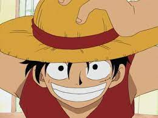

monkey-d-luffy was a
pirate born in a small village he raised by a old lady called (dadan) and also he trained on his grand pa's hand monkey-d-garb luufy ond day met a pirate called shanks and eat a devel fruit that was with shanks devel fruit name was GOMO GOMO NOMI and he bacome gomo man after that when he met his brothers ACE and SABO he changed alot they all wanted to become a pirate but luffy want to become the king of the pirates

this is a picture of monkey-d-luffy in his first epsiod he was small and weak